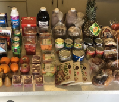

Cheryl Flores
Hello my name is Cheryl Flores and I originate from Los Angeles, California. I am the second oldest from my four siblings. It can be a bit tuff, but I still manage to be a role model for my younger siblings. I come from a big city, so it's hard to see above and beyond my city. But ever since I was a little girl I developed this passion for shoes (nikes and jordans). Unfortunately it still haunts me to this day. I recently came across this job that gave me the opportunity to get in touch with the creation of jordans or nikes. This job is called a “footwear developer”. I am currently on my way to obtain this job. I am currently an undergraduate in the University of Riverside, California with a major in Pre-Business. After my 2 years at UCR, I will be selecting the major Business Administration and heading towards my Bachelors under this concentration. Before I came to UCR, I graduated from South Gate High School in 2023 leaving with a 3.9 GPA. I have received student of the month, superintendent honor roll award, and counselor honor roll. Besides receiving certificates from my school, I was granted scholarships from Scholarship Lourdes Valenzuela de Casillas Memorial and Don Jose de la Luz y Caballero Scholarship. However during my years at my high school, I have been an election worker in 2022. This next project outside of my academic life was to go work and help with the election of 2024, which revolves itself around the work ethic to count votes , manage polling sites , and assist people who don’t quite understand . I hold myself up to high standards for this along with any other job . Being an election worker will not affect my work hours or availability by any means as I will prioritize this job at all costs. Besides my working, I would devote my time to serving my community. On my days off, I would go help my community by going to soup pantries and helping out the homeless around my area and organized food. For instance, I would accumulate cans of food or even plates of food and give back to those in need. During my journey, I have gathered multi-tasking skills, accepting criticism, flexibility, responsibility, and self-management. I think the skill that has impacted me the most is being organized, but because I'm able to put everything into place and have a plan for everything, and even have a back up plan. I am the type of person to have a check off list and plan out my day. I feel like I should have my day planned out before I get out of bed, and do something productive, even if it's catching up on readings or studying. I'm still doing something productive and keeping occupied. I enjoy being productive and engaging on new adventures and activities. Being able to do these jobs has really shaped me to the person I am today. They have shown me the different opportunities the world has to offer and the different types of people you encounter.
Enter bio here
Enter bio here
Experience
Soup Pantry participant
• Helping my community
• Feeding the ones in need
• Accumalte foods and cans
Election worker
• Count votes
• Managing polling sites
• Assiting people who dont understand
• Responsibily of work station
Education
UC Riverside
South Gate High School
Portfolio
